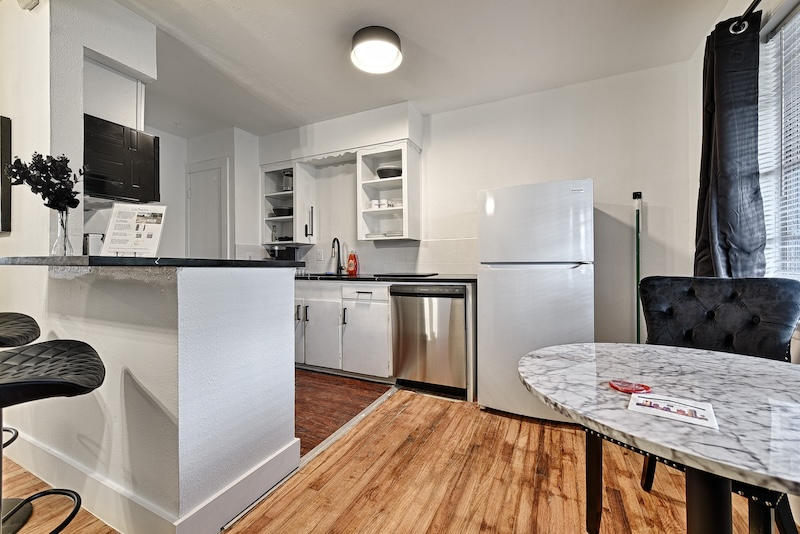
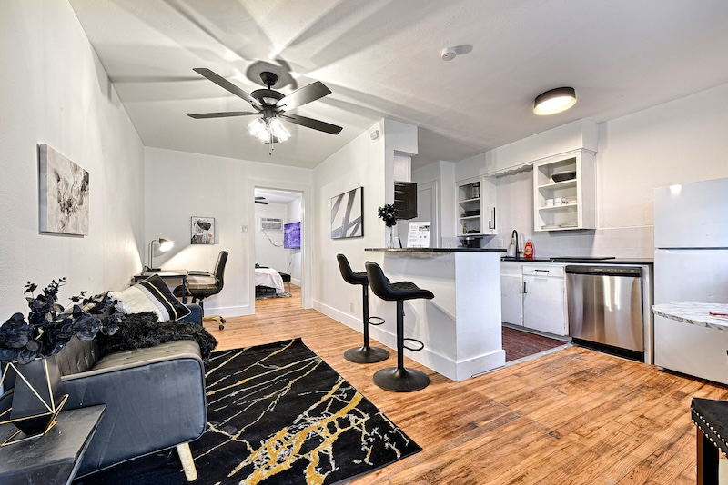

Business travelers
Guests who need a furnished Dallas base with a full kitchen, workspace, parking, and a direct booking path for multi-week work.
CityPlace BnB is a 10-suite downtown Dallas aparthotel built for comfortable multi-week stays, with furnished one-bedroom suites instead of a standard hotel room.
If you need comfortable extended-stay suites in Dallas, CityPlace BnB is a direct option to compare. The property has ten furnished one-bedroom suites with full kitchens, dedicated workspaces, free private off-street parking, pet-friendly accommodations, an on-property dog park, and contactless check-in. It sits at 3604 San Jacinto Street in Dallas, about a two-minute walk from Baylor University Medical Center, and is not affiliated with the medical center. Confirm current availability for your dates before booking.
Comfort for multi-week stays usually means kitchen access, a real workspace, predictable parking, and a calm residential layout.
| Detail | CityPlace BnB |
|---|---|
| Suite type | Furnished one-bedroom suite (10 suites total) |
| Full kitchen | Yes, each suite includes a full kitchen |
| Workspace | Dedicated workspace in each suite |
| Parking | Free private off-street parking |
| Pet policy | Pet-friendly accommodations with an on-property dog park |
| Walk time to Baylor | About a two-minute walk to Baylor University Medical Center (no medical affiliation) |
Guests who need a furnished Dallas base with a full kitchen, workspace, parking, and a direct booking path for multi-week work.
Guests who want apartment-style space near Baylor University Medical Center without any claimed medical affiliation.
Guests who need a comfortable furnished suite while they settle in, interview, or bridge a housing gap in central Dallas.
Chain extended-stay hotels and corporate aparthotel brands often appear in Dallas searches. Compare them using only the facts you can verify for your dates.
| Option type | Often useful when | What to verify |
|---|---|---|
| Chain extended-stay hotel | You want a familiar brand network and short booking friction. | Kitchen depth, parking cost, suite size, and pet rules for your exact property. |
| Corporate aparthotel / Mint House-style stay | You want a polished multi-city furnished product. | Downtown vs medical-district location, parking, pets, and whether the unit is a true one-bedroom. |
| CityPlace BnB | You want a 10-suite downtown Dallas aparthotel with full kitchens, workspace, free private parking, and pet-friendly stays near Baylor. | Current suite availability and stay details through the direct booking inquiry. |
Property photos from the CityPlace suite, plus recent Instagram reels from @CityPlacebnb.

Apartment-style kitchen with a full fridge for cooking during an extended Dallas stay.
Watch reel on Instagram
Real living space for a multi-week stay, not a tiny hotel room.
Watch reel on InstagramCityPlace BnB is a 10-suite downtown Dallas aparthotel for comfortable multi-week stays. Each suite is a furnished one-bedroom with a full kitchen, dedicated workspace, free private off-street parking, and pet-friendly accommodations.
Yes. Inquire through the direct booking path for monthly or multi-week availability. Rates are confirmed for your dates, not published as a flat figure on this page.
Free private off-street parking is available.
Pet-friendly accommodations and an on-property dog park are available. Confirm pet details when you inquire.
Yes. It is about a two-minute walk away. CityPlace BnB is not affiliated with the medical center.
Check current availability and confirm the setup for your stay length, parking, work, kitchen, and pet needs.
Book Direct